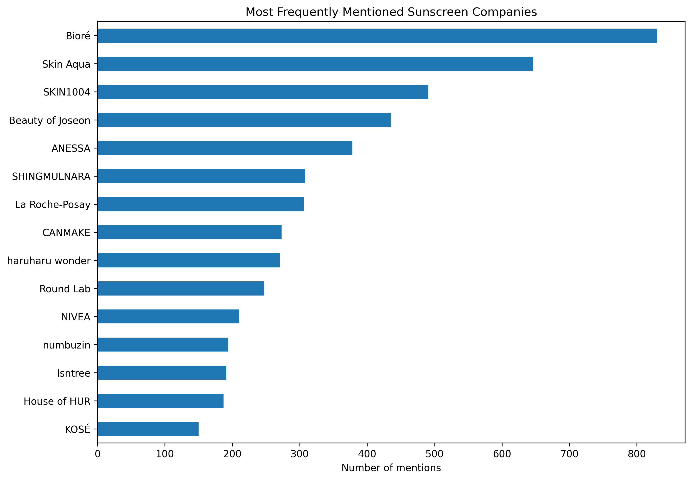
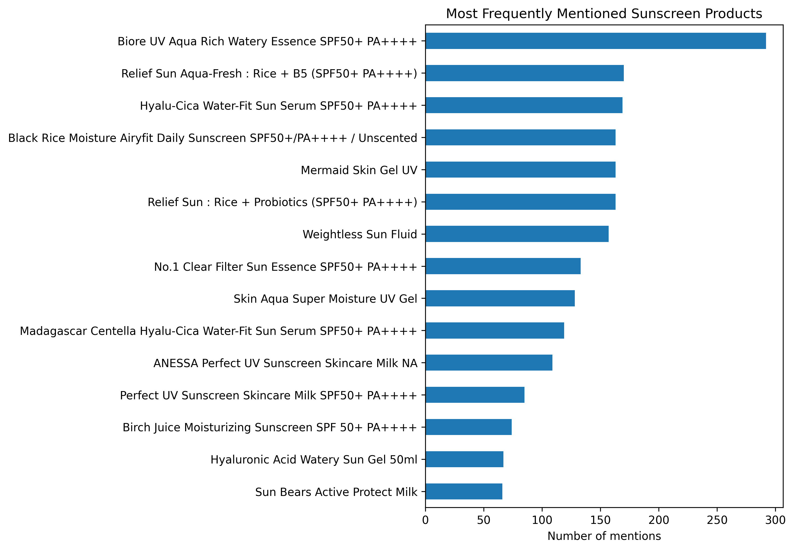
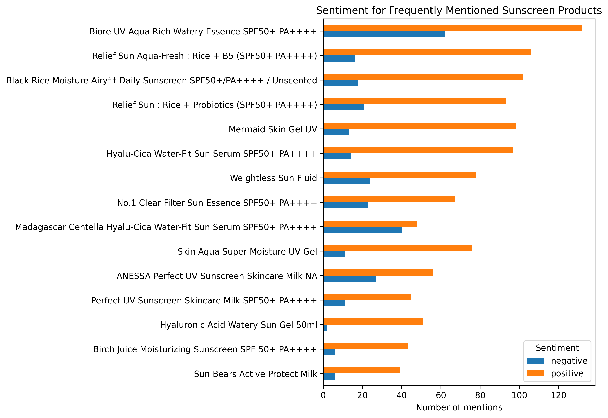

The Most Frequently Mentioned Sunscreens on Reddit
I was interested in buying a good sunscreen, so I went to Reddit to do my research. Usually, when I am interested in buying a product, Reddit is one of the first places I look for reviews.
YouTube can also be quite helpful for getting a good overview of the top products on the market and some useful background information, especially when you have no idea what you should be looking for in the first place. I remember when I used to read blogs and random forums to find useful information, but those days are basically over. The younger generation seems to do a lot of their research on TikTok, which is still quite an alien social media platform to me.
Despite there being so much information out there, if you don't have some basic knowledge, you can quickly get overwhelmed by the seemingly contradictory opinions on literally every single brand and product. Even after reading several Reddit posts and hundreds of comments, I still could not decide on a single sunscreen.
There always seems to be a mixture of very positive and very negative opinions about almost every popular sunscreen. One person would call a product their holy grail, while the next person would say that the same product was too greasy, caused irritation, or simply did not work for them. It's worth keeping in mind that some people may be impatient, inconsistent in their routines, or simply misidentify the cause of their actual problems. Ultimately, maybe to a fault, I do believe that many mainstream sunscreen products can provide good protection when used correctly, although the formulation, level of protection, amount applied, and reapplication still matter.
Nonetheless, I still wanted to have a broad overview of the most frequently mentioned sunscreens on Reddit. This is where knowing how to code can be quite useful. Instead of continuing to read individual comments manually, I decided to analyze several thousand Reddit comments to find out which sunscreen brands and products were discussed most frequently and whether they were mentioned positively or negatively.
I got the Reddit data via their API. Luckily, I already had API credentials before Reddit tightened its API access and approval requirements in 2026. The data used in the project covers a little over one year, from 2 August 2025 to 5 August 2026, and comes from beauty- and skincare-related subreddits.
After analyzing the collected data and doing more research on the ingredients, I ultimately decided to buy the Beauty of Joseon Relief Sun Aqua-Fresh, a Korean sunscreen. It's alright, I guess. Korean sunscreens seem to be quite popular nowadays, and some popular products can go out of stock pretty quickly. So please stop hoarding.
The project went through several iterations. Some approaches worked, some turned out to be unnecessarily complicated, and some had to be redesigned completely. The steps mentioned below are not the actual steps I took to get the finalized, clean dataset for analysis. These are the steps that, in hindsight, I would take if I were to start the project again.
TL;DR Version of What I Did
I collected Reddit posts containing terms related to sunscreen from various beauty- and skincare-related subreddits and then collected the comments underneath these posts, all via the API. For every single comment, I reconstructed its conversation chain. In the end, I collected around 48,000 comments. I used an LLM to extract the relevant information, as using strict regex would have been unnecessarily complicated and prone to errors. Frankly, it would also have been impractical.
The LLM extracted sunscreen brands, product names, and sentiment from the unstructured comments. I then cleaned and normalized the company and product names, filtered out uncertain results, and linked every retained sunscreen mention back to its original Reddit conversation.
The final analytical dataset contained:
- 8,706 sunscreen mentions
- 8,678 mentions with a resolved company
- 5,369 mentions with a confidently resolved product
- 757 Reddit posts
- 6,587 Reddit comments
- 430 normalized brand/company identities
- 940 normalized company-product combinations
I then analyzed the final data with Pandas to find the most frequently mentioned brands and products and compare their positive and negative sentiment.
Overview of the Main Stages
At a high level, the project went through the following stages:
- Collect relevant posts and comments from beauty and skincare subreddits via the Reddit API.
- Store the raw Reddit data with fields such as IDs, parent IDs, text, URLs, and content type.
- Reconstruct the full conversation chain for each target comment, from the original post through the parent comments to the final comment.
- Create a small manually reviewed evaluation dataset and run a smoke test to verify the complete LLM processing workflow.
- Process the comments with the OpenAI Batch API and extract the sunscreen company, product name, sentiment, and resolution status.
- Combine the Batch results into a dataset containing 19,743 extracted sunscreen mentions, with one row for each identified sunscreen mention.
- Normalize company and product names so that spelling differences, aliases, and alternative product names are mapped to consistent names.
- Filter the results based on extraction and normalization confidence, keeping only sufficiently reliable mentions.
- Create the final cleaned dataset containing 8,706 sunscreen mentions while preserving the original Reddit conversation context for each result.
- Analyze the final dataset with Pandas at the company, product, and sentiment levels.
- Use the results to identify the most frequently mentioned sunscreen brands and products and compare their positive, negative, mixed, and unclear sentiment.
The most important design decision was to preserve the original Reddit context throughout the pipeline. Even after normalization and filtering, every final result could still be traced back to the original Reddit post and comment.
Now let us go through the steps in a bit more detail.
Extract raw data through the Reddit API
The first step was getting the raw posts and comments. Reddit provides an API through which posts, comments, and their relationships can be retrieved. API access has become more restrictive over time, but I already had the credentials required for the project.
A Reddit comment by itself is often not enough to understand what is being discussed. Imagine that a comment simply says "I don't like it at all." From this comment alone, we cannot determine what it refers to. The actual conversation could look like:
For example, a Reddit post might ask, "What sunscreen are you currently using?" A comment could reply, "I've been using the Skin Aqua Super Moisture UV Gel," followed by another reply saying, "I don't like it at all."
The final comment only makes sense when we know its parent. For this reason, I reconstructed the complete conversation chain for every target comment, starting with the original post, followed by the oldest parent comment, any intermediate parent comments, the direct parent, and finally the target comment.
I preserved only the fields that would later be useful for further processing:
idparent_idtitlefor posts onlybodyurltype, indicating whether the item was a post or comment
Define exactly what the LLM should extract
The Reddit comments are unstructured text. What I ultimately needed, however, was structured data that could be analyzed with Pandas. The basic idea was therefore to use an LLM to extract sunscreen mentions from a Reddit conversation. I wanted the model to output structured data in the form of JSON so that deterministic post-processing could be performed.
For every sunscreen mention, I asked the model to return:
mention_text, that is, the exact text from the Reddit comment that referred to the sunscreen being extractedcompanyproduct_namesentimentresolution_status
The sentiment could be positive, negative, mixed, or unclear.
The resolution_status could be exact, probable, ambiguous, or unresolved.
This distinction is important. I did not want the model to invent a precise product just because a sunscreen appeared to be identifiable. I wanted the model to explicitly tell me when the identification was uncertain. For example, consider the comment "I've been using La Roche-Posay Anthelios and I love it, but I don't like their other sunscreen." A possible structured response would be:
{
"sunscreens": [
{
"mention_text": "La Roche-Posay Anthelios",
"company": "La Roche-Posay",
"product_name": "Anthelios",
"sentiment": "positive",
"resolution_status": "probable"
},
{
"mention_text": "their other sunscreen",
"company": "La Roche-Posay",
"product_name": null,
"sentiment": "negative",
"resolution_status": "ambiguous"
}
]
}The second mention is still useful information, but it should not be treated as if the exact product were known.
Create a small evaluation dataset before processing everything
One mistake I wanted to avoid was processing thousands of comments before knowing whether the prompt or the code actually worked. Working with a smaller dataset is less costly and requires less time for debugging. So I first created a small manually reviewed evaluation dataset. For these comments, I knew approximately what the correct output should be. I could then send them through the same extraction process and inspect the results. This allowed me to improve:
- the extraction instructions
- the structured output schema
- handling of conversation context
- handling of uncertain products
- sentiment classification
I also ran a single-request smoke test first to make sure the following steps worked without producing any errors:
- Create the JSONL file
- Upload the file
- Create the Batch job
- Wait for processing
- Download the output
- Parse the result
Only once this worked did I move on to the larger dataset.
Generate the complete extraction Batch
After validating the extraction logic, I generated one LLM request per Reddit comment. There were 48,628 comments to process, and the complete JSONL file was around 182 MB. This was uncomfortably close to the Batch API limits at the time: 50,000 requests and a 200 MB file size. So, rather than submitting one very large job, I split the file into two equal parts of 24,314 requests each, and both parts were processed separately.
This also made the pipeline easier to manage. If one job failed, I would not have to repeat the entire extraction.
I used the Batch API because this was offline processing. I did not need an immediate response for each comment, and batch processing was 50% cheaper than sending the same requests synchronously.
Parse the LLM output
Once the Batch jobs had completed, I downloaded the resulting JSONL files and converted the structured model responses into a normal tabular dataset.
One problem appeared here.
My first parser assumed that the model response text would always be found at
something similar to response["body"]["output"][0]["content"][0]. That assumption was
wrong.
The Responses API can return several output items, and the generated text
does not necessarily occupy the first element.
The corrected parser instead searched through the output and its content items until it found
an item with type == "output_text".
This was a small implementation detail, but an important lesson: do not build
a parser around the assumption that an API's nested response will always
contain the desired element at a fixed array position.
After parsing both batches and combining them, I had 19,743 sunscreen mention rows with the following resolution statuses:
| Status | Mentions |
|---|---|
| Exact | 8,616 |
| Probable | 1,742 |
| Ambiguous | 7,018 |
| Unresolved | 2,367 |
Note that one row represents one sunscreen mention, not one Reddit comment. A comment mentioning three sunscreens could therefore generate three rows.
Attach the original conversation to every mention
At this point, I had the extracted sunscreen information, but I did not want to lose where it came from. So I joined every extracted mention back to the Reddit comment and its conversation chain. The resulting dataset contained the following fields:
post_idcomment_idconversationmention_textcompanyproduct_namesentimentresolution_status
The conversation column contained the complete nested Reddit
context. The resulting dataset became one of the main source datasets and was saved as a JSONL file.
Using JSONL rather than CSV was useful here because the conversation itself
is a nested structure.
Normalize company and product names
It would have been nice if the above-mentioned dataset had been the final transformed dataset that we could use directly for analysis, but after looking at the extracted values, I realized that there was still quite a bit of cleaning left to do.
One of the main problems was that company and product names were not written consistently.
For example, the same brand could appear as Biore, Bioré,
BIORE, or biore. If these values were counted directly, they would
all be treated as different companies even though they refer to the same brand.
Product names were even more difficult. People often use shortened names, incomplete
names, or informal ways of referring to a product. For example, a sunscreen might be
mentioned using names such as Biore Aqua Rich, Watery Essence,
Aqua Rich Essence, Biore UV, or simply
the Biore sunscreen, depending on the surrounding context.
So before doing any meaningful analysis, I needed to normalize the extracted company and product names. In other words, I needed to map the different variations back to one consistent company name and, where possible, one consistent product name.
This turned out to be one of the more difficult parts of the project because simple string cleaning was not enough. Some differences were only spelling variations, while others required understanding whether two slightly different names actually referred to the same product or to different versions of a product.
First normalization pass
Rather than sending all 19,743 extracted sunscreen mentions through another LLM individually, I first grouped repeated combinations of the extracted company and product names.
This was useful because the same raw combination often appeared many times in the dataset.
For example, if Biore + Aqua Rich appeared 100 times, it only needed to be
normalized once. The resulting mapping could then be applied back to all 100 original mentions.
After grouping the repeated company and product combinations, I ended up with roughly 7,058 normalization requests, which was much smaller than processing all 19,743 rows again individually.
For each combination, the LLM was asked to return a more consistent company and product name, together with a status describing how confidently the mapping could be made.
The output contained canonical_company, canonical_product_name, and
normalization_status.
The canonical_company and canonical_product_name were meant to be
the cleaned and standardized names that could later be used for grouping and analysis.
The normalization status could be exact, probable, ambiguous, or unresolved.
For the analytical dataset, I decided to retain only exact and probable results.
I deliberately kept probable results because people often use shortened or incomplete product names. Keeping only exact matches would have removed a lot of useful data even when the intended product was still reasonably clear.
This first pass improved the data considerably, but it did not completely solve the problem. Company names were still fragmented in some cases, and product names were still much more inconsistent than I wanted for the final analysis.
Normalize company names separately
Even after the first normalization pass, I still found several variations of the same company or brand name. Since company and brand names are much easier to standardize than product names, I decided to handle them separately first.
I created a mechanical company key by applying the same sequence of text-cleaning steps to every company name:
- remove leading and trailing whitespace
- apply Unicode normalization
- remove accents
- convert to lowercase
- remove spaces and punctuation
For example, Bioré, Biore, and BIORE would all become biore.
This allowed obvious spelling and formatting variations to be grouped together. The key itself was only used internally for matching and was never used as the final company name shown in the analysis.
However, this mechanical step could only solve simple variations. Some extracted company names were aliases, shortened forms, product lines, or, in some cases, not actually company names at all. So I performed another research-based normalization step for the remaining company identities.
For each company key, the model was asked to determine whether the extracted name was already correct, needed to be corrected, was an alias for another company, was not actually a company, or could not be resolved.
Each company mapping was classified as confirmed if the name was already correct,
corrected if it needed to be changed, alias if it referred to another
known
company name, not_company if the extracted value was not actually a company, or
unresolved if the identity could not be determined reliably. Each result also received
a
high, medium, or low confidence level.
High-confidence confirmed, corrected, and alias results could then be used to create the final company mapping.
For the few important cases where the automated result was still incorrect or misleading, I manually corrected the mapping. This gave me one consistent company name that could be used throughout the rest of the analysis.
Product normalization was more difficult
Products cannot simply be normalized globally. Two different companies could potentially use similar product names, so product identity had to be evaluated together with the company.
The first version of my product-normalization job used one company per LLM request.
This looked reasonable until I inspected the companies with the most product candidates.
| Company | Candidate product names |
|---|---|
| Bioré | 177 |
| Skin Aqua | 141 |
| SHINGMULNARA | 131 |
| La Roche-Posay | 125 |
Sending 177 product candidates in one request was unnecessarily large and difficult for the model. So I changed the design and split each company into chunks containing at most 40 product candidates.
This resulted in:
- 3,330 company-product candidates
- 492 Batch requests
- 488 successful requests
- 4 failed requests
- 3,299 returned product mappings
The four failed requests represented only 31 product candidates. At that point, I made an important project decision: not to try to achieve perfect normalization. The goal was analysis, not the construction of a commercial-grade product catalog. I therefore ignored those failed mappings and only accepted researched product mappings when the confidence was high and the status was confirmed, corrected, or alias.
Return to the original mention-level dataset
It would have been easy to continue working only with the aggregated normalization tables, but then I would have lost the connection between a normalized product and the actual Reddit comments mentioning it. So, for the final dataset, I returned to the original mention-level data and joined all the normalization results back onto each individual mention.
I then applied two confidence filters. First, the original LLM extraction had to be exact or probable, which gave 10,358 mentions. The first normalization pass also had to be exact or probable. After applying both filters, the analytical core contained 8,706 mentions.
- 8,678 had a resolved company
- 5,369 had a high-confidence resolved product
This was intentional. A mention can still be useful for company-level analysis even when the exact product cannot be determined confidently.
Perform one final mechanical cleanup
Even after all the normalization work, I found a few differences that were purely cosmetic.
For example, Biore UV Aqua Rich Watery Essence and
Bioré UV Aqua Rich Watery Essence were clearly the same product. So I created
one final mechanical key from the already-normalized product names by ignoring capitalization,
accents, spaces, and punctuation.
This detected only 11 duplicate groups. I merged these formatting-only duplicates and deliberately stopped there. I did not use fuzzy matching to automatically merge similar product names because two similar-looking names could represent genuinely different formulations.
This created the final master dataset, with each row representing one sunscreen mention. The most important analytical columns are:
post_idcomment_idconversationmention_textsentimentanalysis_companyanalysis_product_clean
Analyze the final data with Pandas
Once the data was clean enough, the actual analysis was pretty straightforward. I only had to apply simple group-by operations using Pandas. For company sentiment, for example:
company_sentiment = (
df
.groupby("analysis_company")["sentiment"]
.value_counts()
.unstack(fill_value=0)
)From there, I calculated:
- number of mentions
- positive mentions
- negative mentions
- mixed mentions
- unclear mentions
- positive percentage
- negative percentage
I performed the same analysis at the product level. I also used a minimum number of mentions when comparing sentiment percentages. Otherwise, a product with two positive comments could appear to be 100% positive, which would be misleading.
As mentioned earlier, the finished analytical dataset contained:
- 8,706 retained sunscreen mentions
- 8,678 mentions with a resolved company
- 5,369 mentions with a confidently resolved product
- 757 unique Reddit posts
- 6,587 unique Reddit comments
- 430 normalized brand/company identities
- 940 normalized company-product combinations
Overall sentiment was:
| Sentiment | Mentions |
|---|---|
| Positive | 4,875 |
| Negative | 1,110 |
| Mixed | 766 |
| Unclear | 1,955 |
So the majority of retained sunscreen mentions in the final dataset were positive, although there was substantial variation between individual products.
What did the data show?
The ten most frequently mentioned brands were:
| Brand | Mentions |
|---|---|
| Bioré | 830 |
| Skin Aqua | 646 |
| SKIN1004 | 491 |
| Beauty of Joseon | 435 |
| ANESSA | 378 |
| SHINGMULNARA | 308 |
| La Roche-Posay | 306 |
| CANMAKE | 273 |
| haruharu wonder | 271 |
| Round Lab | 247 |

At the product level, the most frequently mentioned product was Bioré UV Aqua Rich Watery Essence SPF50+ PA++++, with 292 mentions.
Other frequently mentioned sunscreens included products from Beauty of Joseon, SKIN1004, CANMAKE, haruharu wonder, House of HUR, and numbuzin.

One particularly interesting result was that mention frequency and sentiment were not necessarily the same thing.
The Bioré Watery Essence was the most frequently mentioned product, but the sentiment around it was relatively divided: 45.2% positive and 21.2% negative.
By comparison:
| Product | Positive | Negative |
|---|---|---|
| Isntree Hyaluronic Acid Watery Sun Gel | 76.1% | 3.0% |
| NIVEA UV Water Gel SPF50 | 76.0% | 8.0% |
| CANMAKE Mermaid Skin Gel UV | 60.1% | 8.0% |
| SKIN1004 Hyalu-Cica Water-Fit Sun Serum | 57.4% | 8.3% |
| Beauty of Joseon Relief Sun Aqua-Fresh | 62.4% | 9.4% |
| Bioré UV Aqua Rich Watery Essence | 45.2% | 21.2% |

I therefore prefer describing the result as identifying the most frequently mentioned and most positively discussed products, rather than saying that Reddit objectively considers one sunscreen the best. The data does not support that stronger claim.
Final thoughts